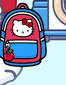
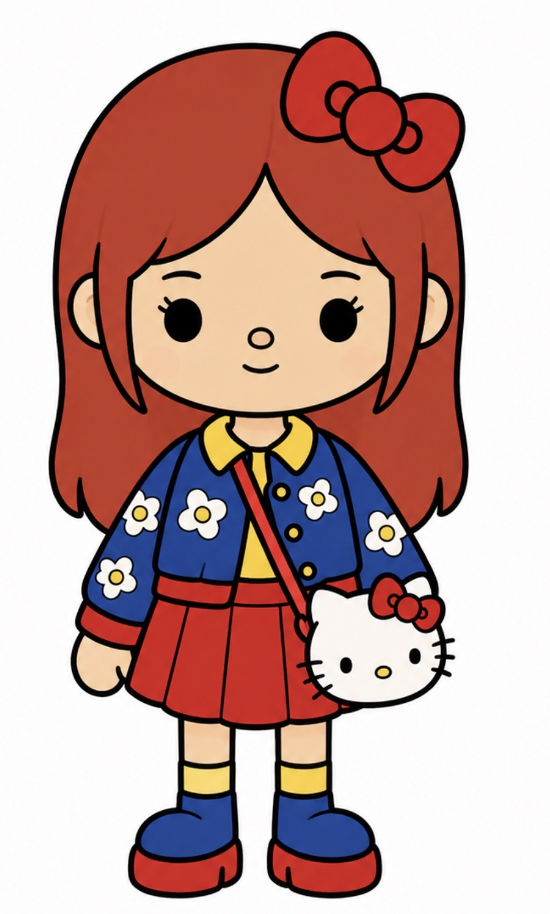
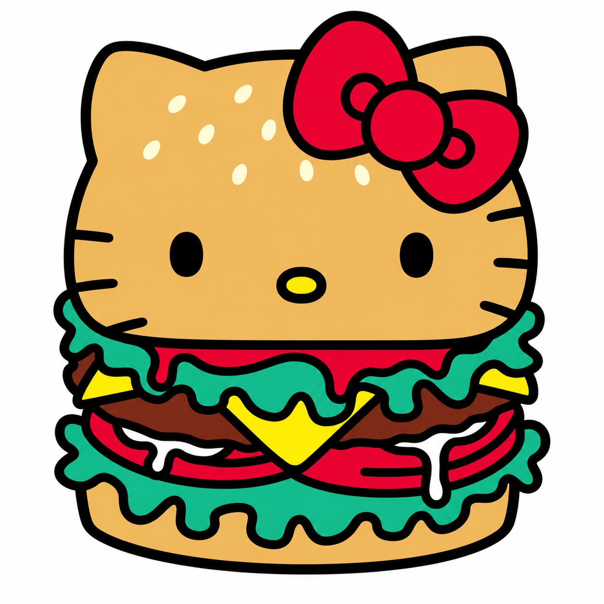

Hello Kitty
New Transfer Student · The Heart of the Group
Hello Kitty just transferred to Sanrio High alongside her lifelong best friends My Sweet Piano and Dear Daniel. Adjusting hasn't been easy — she's got a temper that flares and a roar that surprises people. But underneath all of that is one of the kindest hearts you'll ever find. She's the glue that holds her whole crew together, even when she doesn't realize it.
- Best friends: My Sweet Piano, Dear Daniel
- Personality: Fiery, loyal, surprisingly tender-hearted
- Favorite subject: Math Batsu